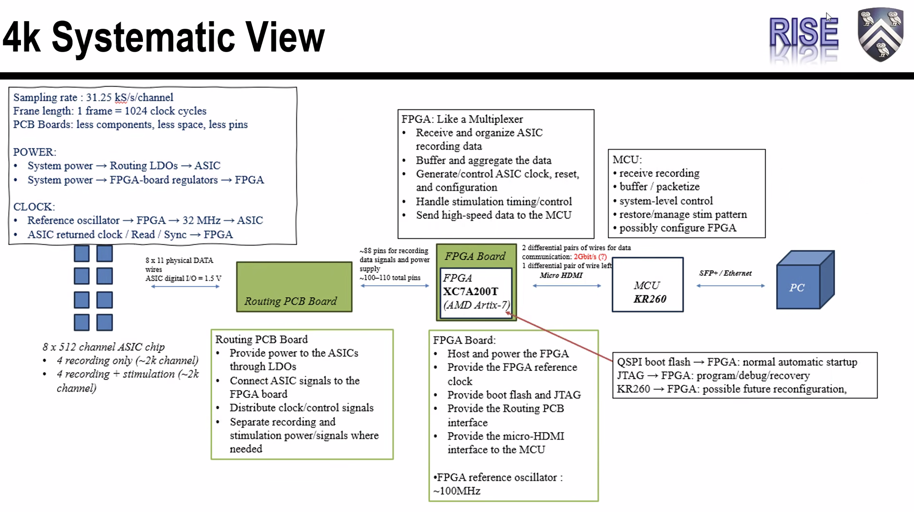

Team meeting · 23 September 2026
4K system: priorities and next steps
FPGA selection and the minimum board design come first. The device, connector, USB 3.0 option and final pin map remain open.
Priorities, in meeting order
- Determine the FPGA board design. Balance logic capacity, pin count, low power and stock. Decide whether USB 3.0 is needed. Minimize the routing board, favor a square footprint over a tall one, and avoid interference with analog signals.
- Resolve the downstream controller and interfaces. Evaluate MCU options and Opal Kelly; compare USB-C with micro-HDMI; define the SPI command stream.
- Study EMI and protection. Headboard shielding, power-surge protection and FDA requirements need further work.
Actions and owners
| Owner | Follow-up |
|---|---|
| Gerald | Check USB 3.0 feasibility/speed and whether a USB-C header can serve the downstream connection. Evaluate Opal Kelly. Coordinate FPGA selection and board design with Howard; shorten the routing board; study EMI precautions. |
| Howard | Confirm the exact pins and required components with Zhitong and Zhao (names as written in the notes). Investigate a smaller board, approximately 30 × 30 mm if feasible, and which components can be removed. |
| Gerald + Howard | Choose the connector/cable considering electrical requirements, cable availability and mechanical mounting. |
| Gerald + team | Check procurement of at least 100 devices for the stated sterilization/certification program. Move toward in vivo stimulation testing after probe packaging is ready. |
| Owner TBD | Close MCU evaluation, SPI command-stream implementation, shielding/protection requirements and FDA follow-up. |
System diagram discussed
Eight 512-channel ASICs → routing/power PCB → FPGA → downstream platform → PC. The diagram shows four recording-only ASICs and four with recording plus stimulation.

Original supplied image. Open it for full resolution.
What remains provisional
- The notes discuss approximately 120 required I/O; the diagram retains an earlier approximately 100–110 total-pin estimate. Reconcile both against a complete pin/bank map.
- The 50T option with 106 I/O was reported insufficient for the discussed requirement. The saved 200T draft is not a finalized device choice; select an exact package using resources, power, dimensions and procurement evidence.
- Approximately 30 × 30 mm is an aspiration, not a completed layout. The slide’s micro-HDMI, XC7A200T, approximately 100 MHz reference oscillator and “2 Gbit/s (?)” are discussion labels, not approved specifications or achieved performance.
- The diagram names KR260; the meeting also calls for evaluating MCU options. KR260 is an MPSoC platform. USB-C and micro-HDMI connector choices alone do not define the transport protocol.
- The slide records 31.25 kS/s/channel, 1,024 clock cycles/frame, intended 32 MHz ASIC clock and 1.5 V digital I/O. These are supplied design context; electrical limits and end-to-end operation still require validation.
Recording and stimulation update
Gerald reported a bench stimulation/recording demonstration, with noise concerns and in vivo work planned after packaging. This is reported progress, not completed in vivo validation. The discussion places spike detection/decoding downstream, with stimulation commands returned to the FPGA; acceptable latency remains application-dependent.
Original notes
Download the unchanged meeting notes. The pasted text contains the priority list and meeting summary; it is not a verified verbatim transcript.
Read the complete supplied notes
a few things to note, sorted by priority determine the FPGA board design what FPGA - sufficient capacity, pin number, low power, enough stock having USB3 or not? routing board needs to have minimal, and preferably more square Vs tall, avoid interference with analog signals determine MCU options evaluate opal kelly what connector/cable? evaluate USB C Vs µHDMI how to implement SPI command stream EMI considerations headboard shielding power surge shielding more study on FDA requirements Meeting assets for Chong Xie’s Personal Meeting Room are ready! Meeting summary Quick recap The meeting focused on the design and progress of a 4K neural recording and stimulation system. Gerald presented updates on stimulation experiments, showing successful recording of sinusoidal signals after stimulation, and discussed plans to move to in vivo testing. The team reviewed the system architecture, including the use of multiple ASICs, a routing PCB, and an FPGA for data multiplexing and demultiplexing. They debated the choice of FPGA model, considering pin count and board size, and discussed the interface options between the FPGA and the MCU, such as micro HDMI or USB-C. Lan and Chong provided input on the mechanical design, suggesting a more compact and square form factor for the FPGA and routing board. The team also discussed EMI considerations and the need for a sufficient number of FPGAs for sterilization and testing. Howard shared preliminary PCB layouts and the team agreed to further refine the FPGA board design based on component requirements. Next steps Gerald Verify feasibility and speed of using USB 3.0 for FPGA-to-PC communication, and report back to the team. Check if USB-C header can be shared with MCU connection, and report findings. Investigate Opal Kelly FPGA carrier board options as suggested by Chong, and evaluate suitability for the project. Finalize the FPGA model selection (e.g., 200T vs. 50T) based on required IO pins (~120) and size constraints, in coordination with Howard. Start designing the FPGA board, considering minimal size and necessary components, and coordinate with Howard and others. Shorten the routing board (blue connector) to minimize the implanted size for large animal experiments. Research and consider EMI precautions, especially for power supply and analog signals, in the FPGA and PCB design. Howard Discuss with Zhitong and Zhao to finalize the exact number of FPGA pins and component requirements. Investigate and finalize the FPGA board size, aiming for a smaller footprint (~30x30mm if possible), and remove unnecessary components (e.g., memory, micro HDMI) to minimize size. Collaboration Gerald & Howard: Decide on the connector type (micro HDMI vs. USB-C) for FPGA to MCU connection, considering cable availability and mechanical mounting. Gerald & Team: Ensure the selected FPGA model (and quantity) can be purchased in sufficient numbers (at least 100) for sterilization and certification purposes. Gerald & Team: Move the stimulation setup to in vivo testing once the chip packaging with probes is ready (expected in the next few days). Summary Stimulation Recording System Demonstration Gerald presented his work on enabling stimulation recording, demonstrating a setup with stimulators connected to resistances and a signal source. He explained the recording process, which captures data before and after stimulation, and showed a simulation result with 100 Hz frequency and 10-second recording time. While the current setup faces noise challenges due to the large resistor and lack of Faraday cage protection, Gerald expressed confidence that the solution would work properly when tested with the probe. Stimulation System Architecture Updates Gerald explained that recording time in static mode can be extended from 10 seconds to unlimited duration, with the main limitation being FPGA write speed. The team plans to move the stimulation system to in vivo testing, with Winan working on packaging the chip to boards with probes for implantation in the coming days. Gerald outlined the 4K system architecture, which includes eight chips connected through routing boards, FPGA, MCU, and PC via SFP or Ethernet. FPGA Design and Implementation Discussion Gerald explained the FPGA design details, including 88 pins for output data at 2 gigabit per second and its dual role as a multiplexer for output data and demultiplexer for stimulation control. The team discussed hosting the FPGA on a custom PCB that would include a micro HDMI connector to interface with the MCU, though USB connectivity remains an alternative option. Gerald raised questions about the implementation of dynamic stimulation, suggesting a potential approach of allocating 1,000 stimulation cycle pulses where each cycle could program stimulators differently. Neural Signal Closed-Loop System Design Chong and Gerald discussed implementing a closed-loop system for recording and stimulating neural signals. They agreed that spike detection and decoding should be performed on the MCU rather than the FPGA to ensure sufficient computational power, with the decoded stimulation commands sent back to the FPGA. The discussion covered latency requirements, with Chong noting that while single-digit millisecond latency might be needed for some applications, a few tens of milliseconds would be acceptable for general cases. Gerald suggested designing the FPGA board to connect to both the MCU and USB 3.0 for flexibility, though Chong questioned the feasibility of using USB for real-time data transfer. HDMI Cable Implementation Discussion Gerald explained that HDMI cables have 20 wires but only about 9 independent wires can be used for their implementation. The team discussed using USB 3.0 or USB-C as an alternative, with Chong suggesting they could potentially use the same physical connector for both HDMI and MCU connections. Gerald agreed to check if they could share the USB 3.0 header with the MCU and would provide more information later. FPGA Board Specifications Discussion The team discussed FPGA board specifications and interface requirements. Howard presented a headboard design with dimensions of 53mm in the X dimension and 17-18mm for the headboard itself, requiring approximately 120 pins for interface connections. Gerald suggested checking with 7TP regarding FPGA resources since they had previously worked with similar specifications, and Chong noted they could use a larger FPGA for redundancy if power and space constraints allow. FPGA Requirements for Interop Project The team discussed FPGA requirements for an interop and EMU setting, with Gerald noting that the current 50T FPGA with 106 IOs is insufficient and needs to be replaced with something closer to 120 pins. Pavlo reported that the Arctic 7 FPGA has a 52-week lead time and is only available in small quantities, requiring 20-30 units for certification and protocol development. Chong emphasized the need to ensure at least 100 units can be purchased, and Lan raised questions about the FPGA board’s dimensions, suggesting a more square design rather than being longer in one dimension. FPGA Board Design Modifications The team discussed design modifications for an FPGA board and routing system, focusing on making components more square-shaped and reducing overall length for better handling and mounting. Gerald presented two versions of the headboard design (V1 and V2) with different connector configurations, and Howard shared preliminary FPGA board designs using different chip sizes (50T vs 200T). The team agreed to prioritize minimal component size and footprint, potentially removing USB 3.0 functionality to simplify the design, with Howard tasked to further investigate component requirements and pin counts in collaboration with Zhitong and Zhao. Attendees: Chong Xie (Organizer), Weinan Wang, Jiaao Zhang (External), Pavlo Zolotavin (External), Zitong Xu, Taiyun Chi, Lan Luan, Gerald Topalli, Howard Wang (External)